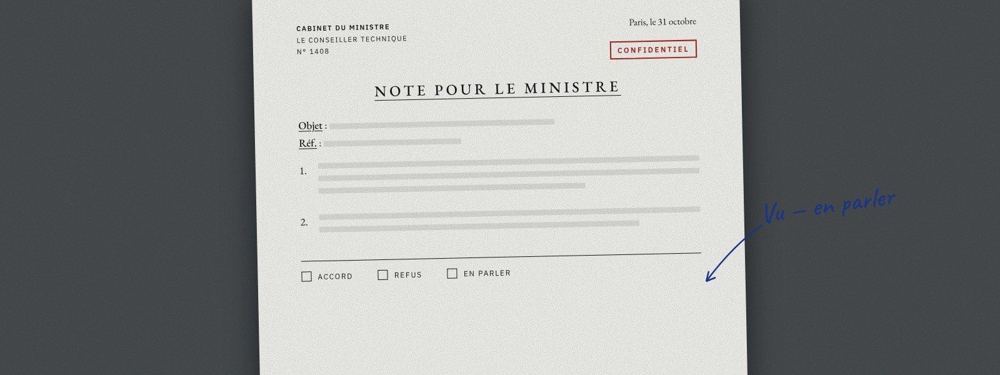
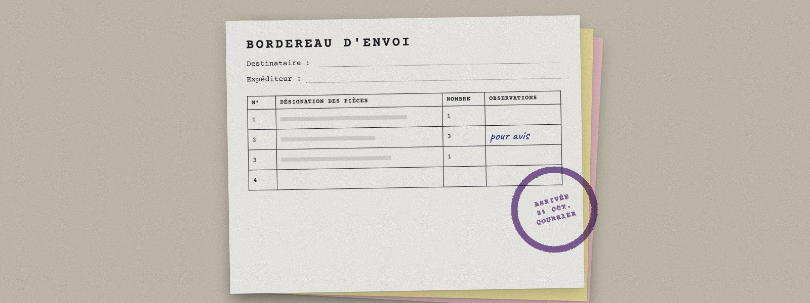
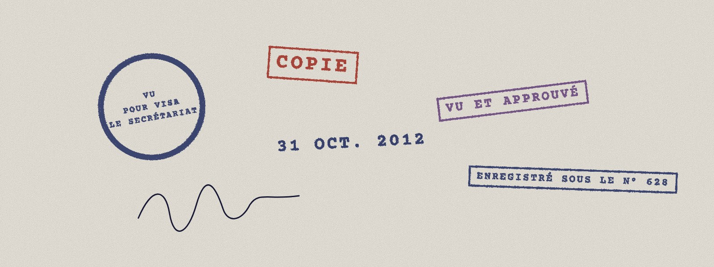
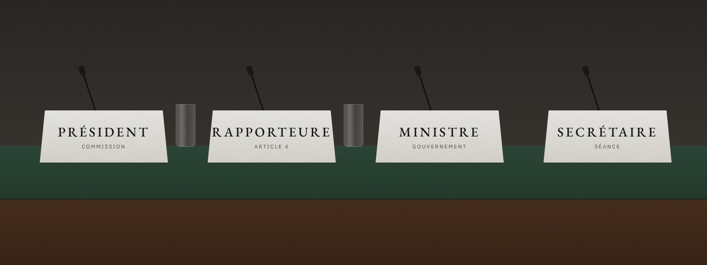
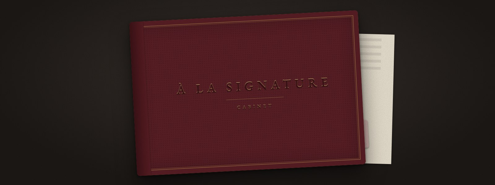
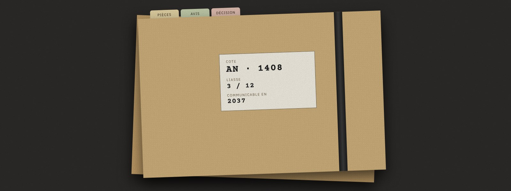

Grain, ombre, feuille de travers. Le plus évocateur, le plus chargé.
Aplats et filets ; seul le sort garde un geste.
Typographie seule ; plus aucune trace de geste.
Le bureau et la feuille dans la même famille de tons.
Fort contraste entre le fond et la feuille.
Objets, réalisme, dosage, thème, typographie.
Planches : ce que devient chaque objet retenu, abstrait (couleurs, filets, motifs), sans interface.
Palette et rôles, corrections apparentes, sorts, rayons et filets ; document et jetons CSS.
Forme uniquement ; captures avant et après.
Les huit maquettes, structure intacte.
| N° | Objet | Proposition du cabinet | Avis |
|---|---|---|---|
| 1 | Objets gardés | Socle : note, bordereau, tampons, table. Parapheur en accent. Chemise écartée. | Accord Refus |
| 2 | Réalisme | B : graphique ; seul le tampon garde une matière, pour les sorts. | Accord Refus |
| 3 | Dosage | Sec partout ; bordeaux et or en accent rare, pour ce qui est solennel. | Accord Refus |
| 4 | Thème | Clair : bureau gris chaud, feuilles de papier ; le papier ne s'inverse jamais. | Accord Refus |
| 5 | Typographie | Source Serif 4 (loi) · IBM Plex Sans (interface) · Courier Prime (numéros) · capitales espacées (en-têtes). | Accord Refus |
| 6 | Calendrier | Motif → signe, DA figée, essai Figma, puis la Vigie. | Accord Refus |